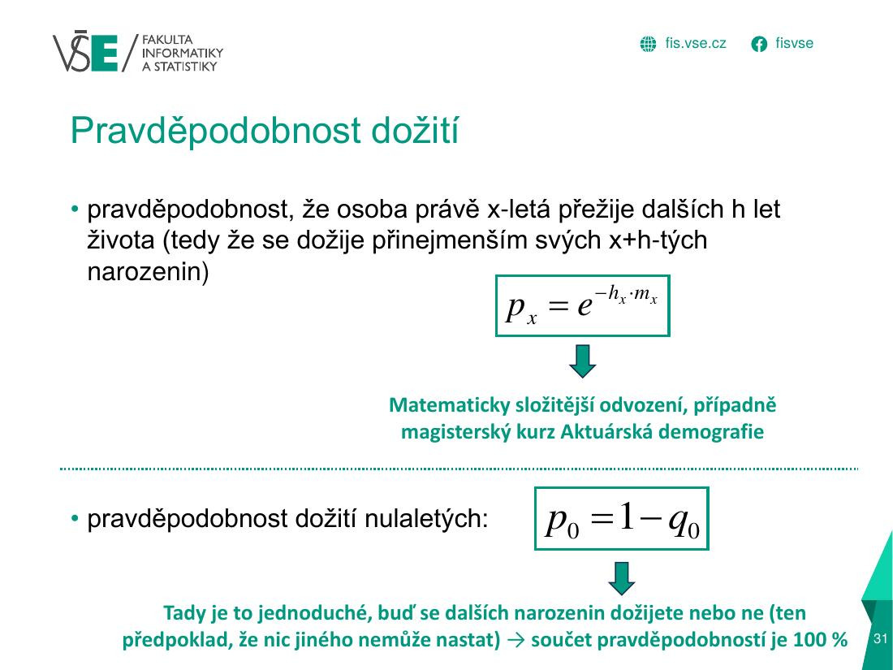
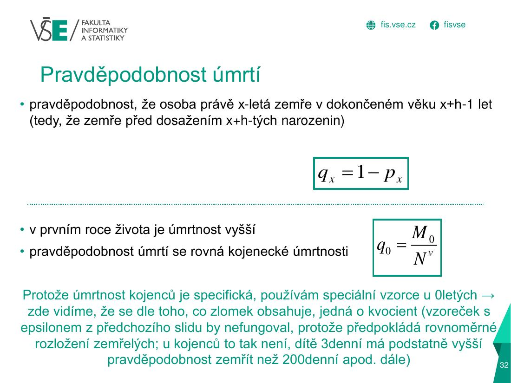
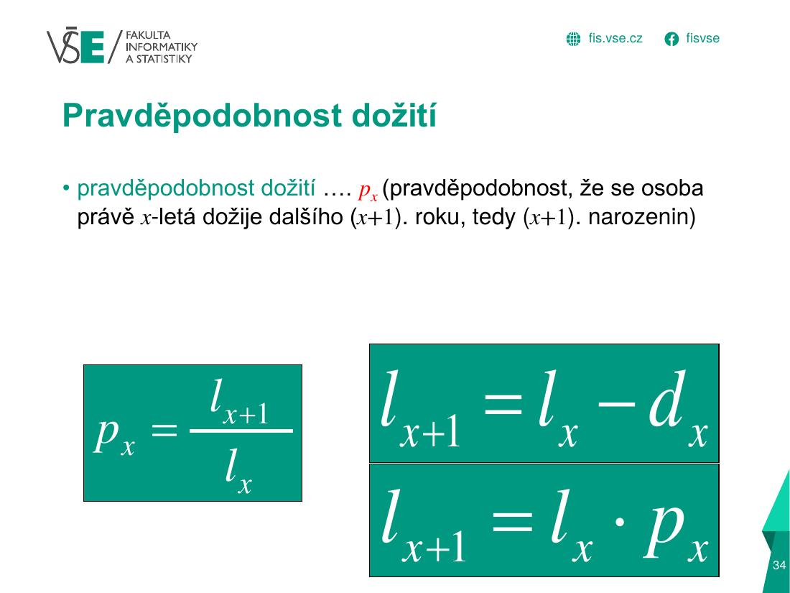
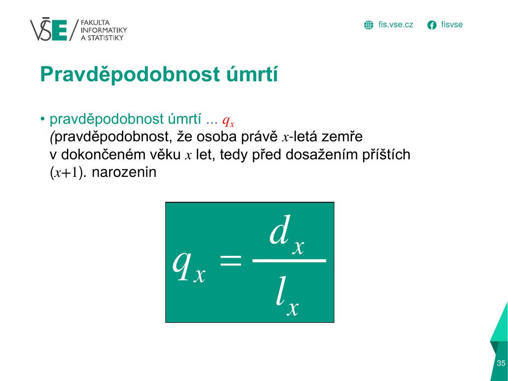
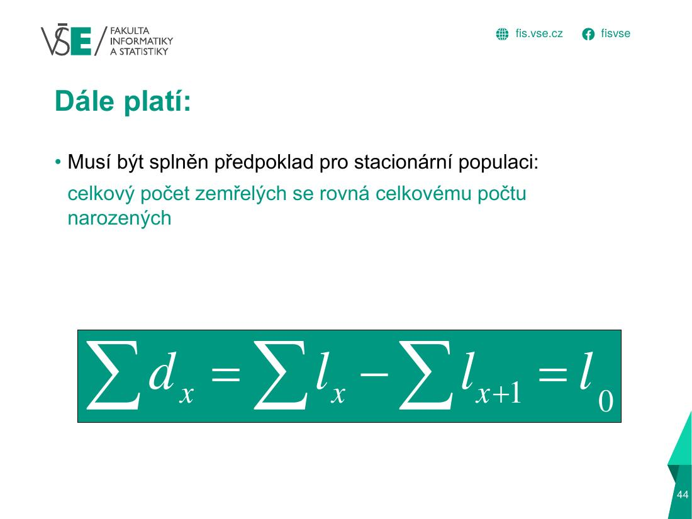
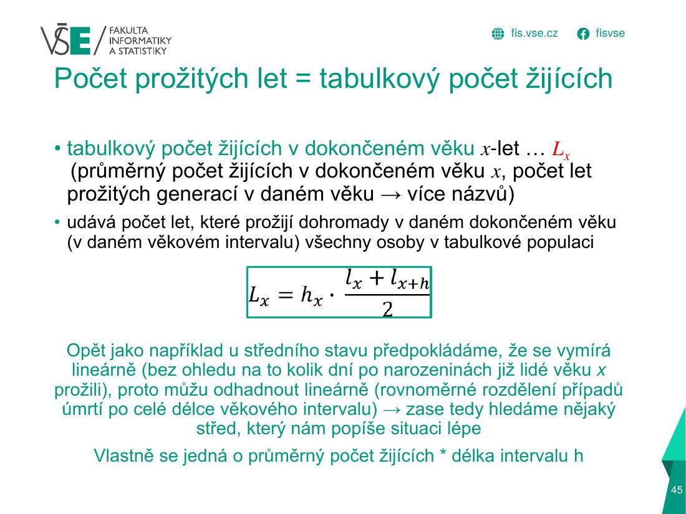
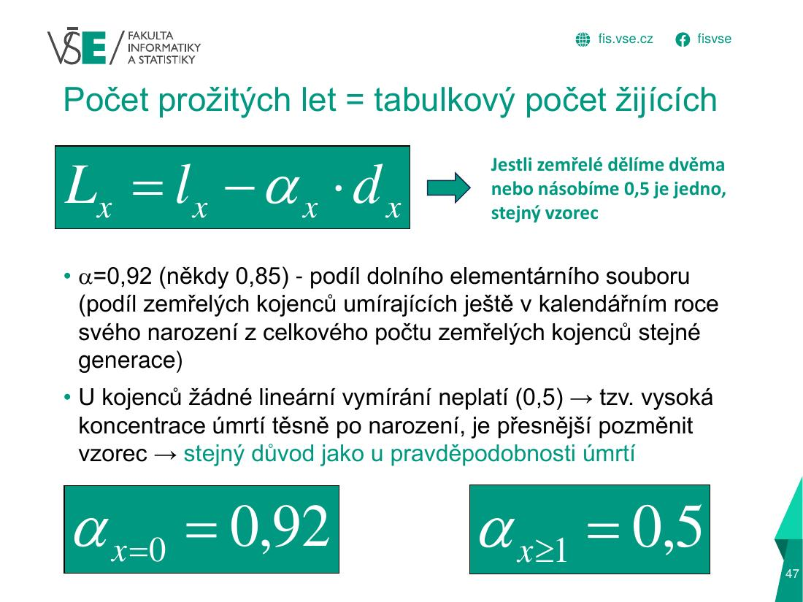
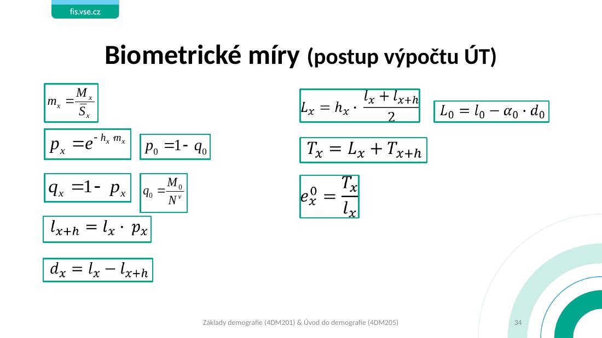

B) Zkrácená úmrtnostní tabulkaÚloha 2 · 8 b
1 · Teorie a vzorce – přímo ze slidů
Klepnutím na obrázek ho zvětšíš (na telefonu můžeš přibližovat).










2 · Postup, vyřešený příklad a pozor na chyby
| Sloupec | Vzorec (konvence cvičení a semestrálky) | Význam |
|---|---|---|
| hx | 1 (věk 0), 4 (1–4), pak 5 | délka intervalu |
| mx | Mx / Sx (poměrné číslo, ne ‰) | specifická míra úmrtnosti |
| q0 (kojenci) | M0 / Nv (zemřelí 0letí / živě narozené stejného pohlaví) | kvocient kojenecké úmrtnosti |
| p0 | 1 − q0 | |
| px (ostatní) | e−h·mx (Excel EXP(−h·m)) | pravděpodobnost dožití dalšího intervalu |
| qx | 1 − px | pravděpodobnost úmrtí v intervalu |
| lx | l0 = 100 000; lx+h = lx · px | počet dožívajících se přesného věku x |
| dx | lx − lx+h (= lx·qx) | počet zemřelých v intervalu |
| L0 | l0 − α·d0, α = 0,85 | prožité roky kojenců (úmrtí hned po narození) |
| Lx (x ≥ 1) | h · (lx + lx+h) / 2 | počet prožitých let v intervalu |
| Tx | Lx + Tx+h (kumulace odzadu) | počet let zbývajícího života |
| ex | Tx / lx | střední délka života (naděje dožití) |
| Poslední skupina | q = 1, p = 0, d = l, L = h·l/2, e = h/2 (např. 2,5) | nikdo se nedožije dalšího |
Vyřešený příklad – ÚT pro muže (kompletní tabulka)
Zadání (vzorový příklad „složitější“ č. 4): dopočítej chybějící údaje ve zkrácených ÚT za muže. q0 = 0,001914 (zadáno), α = 0,85. Žlutě = co v testu chybělo.
| Věk | h | Mx | Sx | mx | px | qx | lx | dx | Lx | Tx | ex |
|---|---|---|---|---|---|---|---|---|---|---|---|
| 0 | 1 | 14 | 7 599 | 0,001842 | 0,998086 | 0,001914 | 100 000 | 191 | 99 837 | 7 600 489 | 76,0 |
| 1–4 | 4 | 5 | 33 235 | 0,000150 | 0,999398 | 0,000602 | 99 809 | 60 | 399 114 | 7 500 652 | 75,2 |
| 5–9 | 5 | 4 | 42 824 | 0,000093 | 0,999533 | 0,000467 | 99 749 | 47 | 498 626 | 7 101 538 | 71,2 |
| 10–14 | 5 | 5 | 43 278 | 0,000116 | 0,999423 | 0,000577 | 99 702 | 58 | 498 366 | 6 602 911 | 66,2 |
| 15–19 | 5 | 8 | 33 950 | 0,000236 | 0,998822 | 0,001178 | 99 644 | 117 | 497 929 | 6 104 545 | 61,3 |
| 20–24 | 5 | 15 | 30 696 | 0,000489 | 0,997560 | 0,002440 | 99 527 | 243 | 497 028 | 5 606 617 | 56,3 |
| 25–29 | 5 | 25 | 39 471 | 0,000633 | 0,996838 | 0,003162 | 99 284 | 314 | 495 636 | 5 109 588 | 51,5 |
| 30–34 | 5 | 42 | 45 462 | 0,000924 | 0,995391 | 0,004609 | 98 970 | 456 | 493 711 | 4 613 952 | 46,6 |
| 35–39 | 5 | 61 | 51 373 | 0,001187 | 0,994081 | 0,005919 | 98 514 | 583 | 491 113 | 4 120 241 | 41,8 |
| 40–44 | 5 | 96 | 64 787 | 0,001482 | 0,992618 | 0,007382 | 97 931 | 723 | 487 848 | 3 629 128 | 37,1 |
| 45–49 | 5 | 149 | 60 685 | 0,002455 | 0,987799 | 0,012201 | 97 208 | 1 186 | 483 075 | 3 141 280 | 32,3 |
| 50–54 | 5 | 217 | 45 698 | 0,004749 | 0,976537 | 0,023463 | 96 022 | 2 253 | 474 478 | 2 658 205 | 27,7 |
| 55–59 | 5 | 318 | 41 209 | 0,007717 | 0,962151 | 0,037849 | 93 769 | 3 549 | 459 973 | 2 183 727 | 23,3 |
| 60–64 | 5 | 559 | 37 794 | 0,014791 | 0,928715 | 0,071285 | 90 220 | 6 431 | 435 022 | 1 723 754 | 19,1 |
| 65–69 | 5 | 963 | 39 259 | 0,024529 | 0,884576 | 0,115424 | 83 789 | 9 671 | 394 765 | 1 288 733 | 15,4 |
| 70–74 | 5 | 1 409 | 34 087 | 0,041335 | 0,813282 | 0,186718 | 74 117 | 13 839 | 335 990 | 893 968 | 12,1 |
| 75–79 | 5 | 1 319 | 20 222 | 0,065226 | 0,721711 | 0,278289 | 60 278 | 16 775 | 259 455 | 557 978 | 9,3 |
| 80–84 | 5 | 1 075 | 10 071 | 0,106742 | 0,586425 | 0,413575 | 43 504 | 17 992 | 172 538 | 298 523 | 6,9 |
| 85–89 | 5 | 942 | 5 154 | 0,182771 | 0,400976 | 0,599024 | 25 512 | 15 282 | 89 353 | 125 985 | 4,9 |
| 90–94 | 5 | 510 | 1 665 | 0,306306 | 0,216204 | 0,783796 | 10 230 | 8 018 | 31 103 | 36 632 | 3,6 |
| 95–99 | 5 | 100 | 306 | 0,326797 | 0,000000 | 1,000000 | 2 212 | 2 212 | 5 529 | 5 529 | 2,5 |
Jak se doplnila žlutá políčka:
- m10–14 = 5 / 43 278 = 0,000116
- p25–29 = e−5·0,000633 = 0,996838 → q25–29 = 1 − p = 0,003162
- l35–39 = l30–34 · p30–34 = 98 970 · 0,995391 = 98 514
- d45–49 = l45–49 − l50–54 = 97 208 − 96 022 = 1 186
- L40–44 = 5 · (l40–44 + l45–49)/2 = 5 · (97 931 + 97 208)/2 = 487 848
- T30–34 = L30–34 + T35–39 = 493 711 + 4 120 240 = 4 613 952
- e15–19 = T15–19 / l15–19 = 6 104 543 / 99 644 = 61,3
Interpretace: střední délka života při narození mužů je e0 = 76,0 let – při dnešní úmrtnosti se právě narozený chlapec dožije průměrně 76 let. Šedesátipětiletý muž má před sebou ještě e65 = 15,4 let. Nejvíc zemřelých dx je ve věku 80–84 (normální délka života).
Kontrola pro tvoji semestrálku: tabulka je stejná logika, jakou máš v listu „ÚT+plodnost“ (α = 0,85; p = EXP(−h·m); L = h·(l+l)/2).
3 · Jak to vypadá v Excelu (tvoje semestrální práce)
Klepni na libovolnou buňku – nahoře se ukáže její vzorec, stejně jako v Excelu.
| A | B | C | D | E | F | G | H | I | J | K | L | |
|---|---|---|---|---|---|---|---|---|---|---|---|---|
| 4 | muži | Živě narození chlapci | Podíl DES zemřelých | |||||||||
| 5 | Nt | alfa | ||||||||||
| 6 | 1 924 | 0,85 | ||||||||||
| ⋮ | … řádky 7–7 mají stejný vzorec (vyplněno dolů) … | |||||||||||
| 8 | Věk | Šířka věkového intervalu | Počty zemřelých | Počty obyvatel k 1.7. | Specifické míry úmrtnosti | Pravděpodobnost dožití | Pravděpodobnost úmrtí | Počet dožívajích | Počet zemřelých | Počet prožitých let | Počet let života | Střední délka života |
| 9 | x | hx | Mx | Sx | mx | px-M | qx-M | lx-M | dx-M | Lx | Tx | ex0-M |
| 10 | 0 | 1 | 5 | 2 052 | 0,00244 | 0,9974 | 0,0026 | 100 000 | 259,88 | 99 779,11 | 7 777 400,86 | 77,77401 |
| 11 | 1-4 | 4 | 1 | 10 382 | 0,0001 | 0,99961 | 0,00039 | 99 740,12 | 38,42069 | 398 883,66 | 7 677 621,76 | 76,97626 |
| 12 | 5-9 | 5 | 2 | 14 905 | 0,00013 | 0,99933 | 0,00067 | 99 701,70 | 66,86901 | 498 341,35 | 7 278 738,10 | 73,00515 |
| 13 | 10-14 | 5 | 2 | 14 609 | 0,00014 | 0,99932 | 0,00068 | 99 634,84 | 68,17766 | 498 003,73 | 6 780 396,75 | 68,05247 |
| ⋮ | … řádky 14–29 mají stejný vzorec (vyplněno dolů) … | |||||||||||
| 30 | 95-99 | 5 | 54 | 143 | 0,37762 | 0,15136 | 0,84864 | 4 663,83 | 4 663,83 | 11 659,56 | 11 659,56 | 2,5 |
- F6 – živě narození chlapci Nv, G6 – α = 0,85 (podíl DES zemřelých).
- Věk 0 (kojenci) – speciální vzorce:
G10 =C10/F6(q0 = M0/N),F10 =1-G10(p0),J10 =H10-G6*I10(L0 = l0 − α·d0),H10 =100000(radix). - Ostatní skupiny:
E11 =C11/D11(mx) →F11 =EXP(-B11*E11)(px) →G11 =1-F11(qx) →H12 =H11*F11(lx+h = lx·px) →I11 =H11-H12(dx) →J11 =B11*((H11+H12)/2)(Lx). - Kumulace odzadu:
K11 =J11+K12(Tx = Lx + Tx+h), potomL11 =K11/H11(ex). Poslední skupina:K30 =J30, e = 2,5. - Řádky 9–30: každá skupina používá stejné vzorce o řádek níž – proto je tabulka „vyplněna dolů“.
L10). Pokud ti e0 vyjde nesmyslně (např. > 100 nebo < 50), zkontroluj nejdřív mx (jednotky!) a α.EXP; v testu u poslední skupiny piš q = 1, p = 0, d = l, L = h·l/2, e = h/2 (2,5).